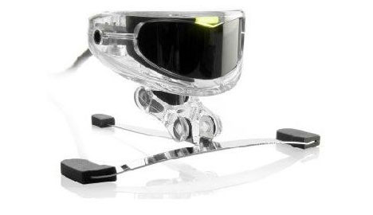

Web-basierte Anwendungen 1
Barrierefreiheit im Internet
31. Oktober 2013
Studiengang Medieninformatik an der Fachhochschule Köln
Campus Gummersbach
Carina Kessel
Ernestine Wassermann
Sebastian Zeitz
Was ist Barrierefreiheit im Internet?
- Barrierefreies Internet sind Web-Angebote, die von allen Nutzern unabhängig von körperlichen oder technischen Möglichkeiten uneingeschränkt (barrierefrei) genutzt werden können.
Barrierefreiheit?! So ein Blödsinn!
Nicht wirklich!
- Barrierefreiheit hilft bei der Integration von Behinderten.
- Sie nützt auch normalen Menschen beim Umgang mit der Webseite
- eine Barrierefreie Seite ist für jeden leichter zugänglich.
- eine nachträgliche Implementierung ist viel schwieriger,
als die Seite sofort Barriefrei zu gestalten. - durch ein responsive Webdesign wird die Seite für mobile Nutzer
aber auch für Behinderte attraktiver.
Motivation:
WELCHE BEHINDERUNGEN GIBT ES EIGENTLICH?
Es gibt 4 große Klassifizierungen von Behinderungen:
- visuell
- motorisch
- kognitiv
- auditiv
Visuelle Behinderungen
Sehbehinderungen - der häufigste Grund für Barrieren im Web
Ein paar Fakten zu Sehbehinderungen:
- weniger als 30% sehvermögen → sehbehindert
- weniger als 5% sehvermögen → hochgradig sehbehindert
- weniger und gleich 2% sehvermögen → blind
- Rot-/Grünschwäche
- Farbenblindheit
- Blendempfindlichkeit
Es gibt auch Farbfehlsichtigkeiten:
Soviele Farbfehlsichtige können das nicht sein!
- 8% der Männer → 6.400.000
- 0,5% der Frauen → 160.000
- Jeder 10.000 ist Farbenblind
Heißt: er kann keine Farben sehen oder er kann keine Helligkeiten erkennen und orientiert sich nur an Rot und Grün
Die Fakten sagen was anderes:
Worauf kann ich als Webentwickler bei visuell behinderten achten und welche Hilfsmittel kann ich verwenden?
- Navigation der Seite nur über Tastatur gewährleistet
- Alle Bilder sollten einen Alternativtext haben
- GANZ WICHTIG: KEINE ANGABEN WIE "AUF DEM BILD SEHEN SIE"!
Blinde:
Farbfehlsichtigkeiten/Blendempindlichkeiten/Sehschwächen
- Schriftgrad skalierbar
- Hintergrund und Schriftfarbe umkehren
- Verzichten auf viele Animationen und farbige Flächen
- Verzicht auf grelle Farbe
- GANZ WICHTIG: KEINE ANGABEN WIE "KLICKE AUF DEN ROTEN BUTTON"!
=> Hilft den Sehschwachen und minimiert das Blenden
Hilfsmittel für Blinde
- Screenreader und elektronische Lupen:
- Braillezeile/Brailleschrift:


Motorische Behinderungen
"Als motorisch Behindert wird ein Mensch bezeichnet, wenn er infolge einer Schädigung des Stütz- und Bewegungsautomates oder einer anderen organischen Schädigung in seiner Bewegungsfähigkeit beeinträchtigt ist“
Nach HEDERICH, Ingeborg-Einführung in die Körperbehindertenpädagogik München 1999 S. 16
Worauf kann ich als Webentwickler bei motorisch behinderten achten?
- Klare Struktur der Seite, damit die Seite auch nur mit Tastatur oder Maus navigierbar ist
- Links und Buttons ohne doppelklick anwählbar machen
Hilfsmittel für Motorische
- Verschiedene Tastatur und Mäuse: 
- Eins der einfachsten Mittel von allen:

Kognitive Behinderungen
„Der Begriff „kognitive (geistige) Behinderung“ dient als eine Art Sammelbezeichnung für vielfälltige Erscheinungsformen und Ausprägungsgrade intellektueller Einschränkungen und affektiven Verhaltens*.“
*affektives Verhalten: ein Verhalten, das überwiegend von kurzen impulsartigen Gefühlsregungen und nicht von rationalen Prozessen bestimmt ist.
Beispiele:
- geistige Behinderungen jeder Art
- Konzentrationsschwächen jeder Art
Worauf kann ich als Webentwickler bei kognitiv behinderten achten?
- leicht verständliche Texte
- keine Textwüsten
- vektorbasierte Texte in pixelbasierten Bildern
- alles auch in Textform anbieten
- verwenden von Symbolen zur Navigation
- keine vom Inhalt ablenkenden Elemente
Auditive Behinderungen
Auditiv Behinderte sollten keinen so großen Nachteil wie die anderen Klassifizierungen im Text basierten Web haben
Falsch! - Für viele Auditiv Behinderte ist die Laut- und Schriftsprache eine Fremdsprache.
- Untertitel nur beschränkt verwendbar
- Jedes Auditive Medium in Gebärdensprache umzusetzen kostet zuviel Zeit und Ressource
- Leitfrage: Wie stellt man eine ganze Webseite in Gebärdensprache dar?
Die Webentwickler stehen vor einer sehr schwierigen Aufgabe:
WCAG und einfache Codebeispiele
- 12 Richtlinien für Barrierefreies Internet
- Wahrnehmbar
- Bedienbar
- Verständlich
- Robust
WCAG: Web Content Accessibility Guidelines
4 wichtige Prinzipien:
Welche Codes kann ich verwenden um meine Seite zu verbessern?
Richtlinien: 2.1 Per Tastatur zugänglich
Zuerst anvisiert
Zweiter Link
Zuletzt anvisiertDem Tabben Farbe verpassen in CSS
Richtlinien: 2.4 Navigierbar
a:link{;}
a:visited{;}
a:focus{color:green; font-size:3em; }
a:hover{;}
a:active{;Alternativtext für Bilder
Richtlinien: 1.1 Textalternativen


Skalierbarkeit der Schrift in CSS
Richtlinien: 1.3 Anpassbar
a { font-size: 1.5em; } Alles umgesetzt – Sind normale User eingeschränkt?
Dort liegt das eigentliche Problem des Barrierefreien Internets.
Zum derzeitigem Standpunkt gibt es keine genauen Vorschriften wie eine Webseite auszusehen hat.
Auch ist es sehr schwer jede Behinderung in einem Design unterzubringen, es bleibt immer etwas auf der Strecke.
Fazit - Warum ist Barrierefreiheit wichtig?
- jeder sollte ein Recht auf Internet haben
- von Barrierefreiheit profitieren nicht nur Behinderte
- erhöht die gesamte Qualität der Seite
| Worauf sollte man achten? | Wem hilft das? |
|---|---|
| Auto-vervollständigung/korrektur in Suchfeldern | Allen (jeder kann sich mal vertippen) |
| Schriftgröße skalieren/Farben anpassen | Allen (Anpassen der Seite an die eigenen Bedürfnisse) |
| Hervorheben von mouseover Elementen | Allen (verbesserte Orientierung auf der Seite) |
| Bedienbarkeit nur mit der Tastatur | Blinden, motorisch Behinderten, Sehgeschädigten |
| Bedienbarkeit nur mit der Maus | motorisch Behinderten (für normale User oft selbstverständlich fast alles mit der Maus alleine zu steuern) |
| Worauf sollte man achten? | Wem hilft das? |
|---|---|
| Verwendung von Symbolen zusätzlich zur Navigation | Menschen mit Lernschwierigkeiten, Legasthenikern, Analphabeten und normalen Usern (schnelleres finden) |
| Bilder dienen nur zur Unterstützung des Inhalts aber nicht ausschließlich dem Verständnis (Stichwort: Alternativtext) | Blinden, Sehgeschädigten, motorisch Behinderten |
| Ein/e gut strukturierter Seitenaufbau / Navigation | Allen, essentiell für Blinde |
Training
1. Phase
Schaut euch die drei unten stehenden Webseiten mal genauer an.
Versucht euch mal nur per Tastatur durch die Seite zu bewegen, was fällt auf?
Welche Behinderten könnten von der Seite angesprochen, welche ausgeschlossen werden?
PS: Auch jeder mit einem Smartphone oder Tablet darf die Seiten mal auf Herz und Nieren überprüfen.
http://bit.ly/Hcq31E
http://bit.ly/eilYO6
Training
2. Phase: Code Implementieren
In der folgenden HTML fehlen ein paar Codestücke, die einfach zu implementieren sind aber schon bei den einfachsten Seiten meist fehlen.
Die Anweisungen befinden sich in den Kommentaren in der HTML-Datei.
http://bit.ly/17v3kZ0
Die Lösung:
http://bit.ly/16HTOmE